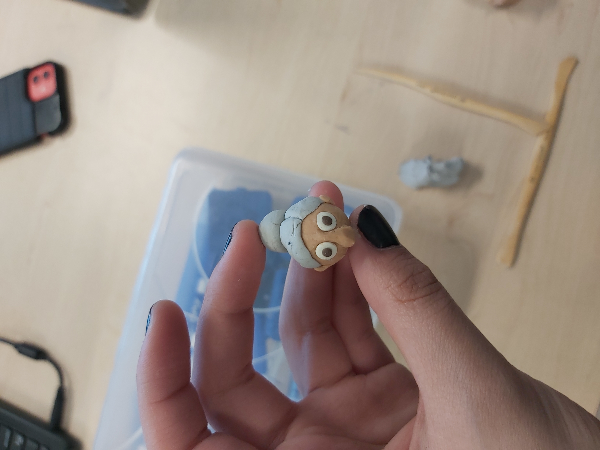
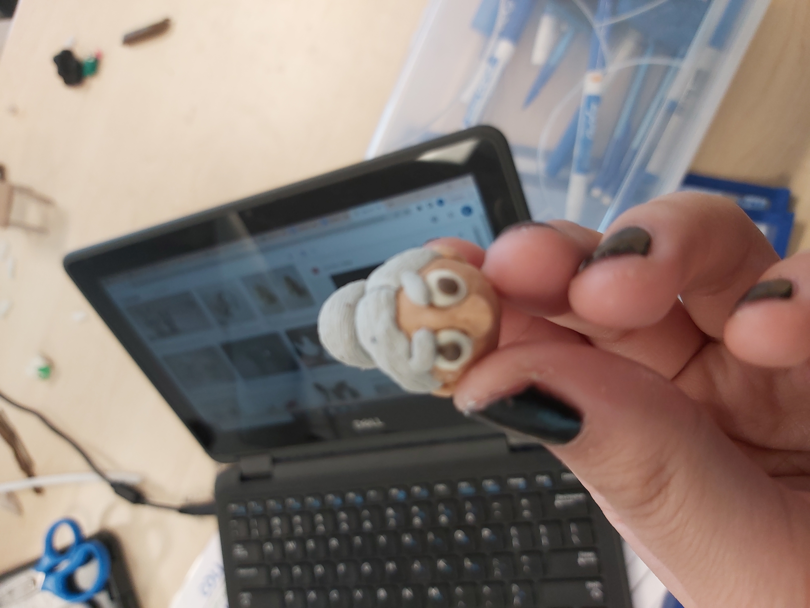
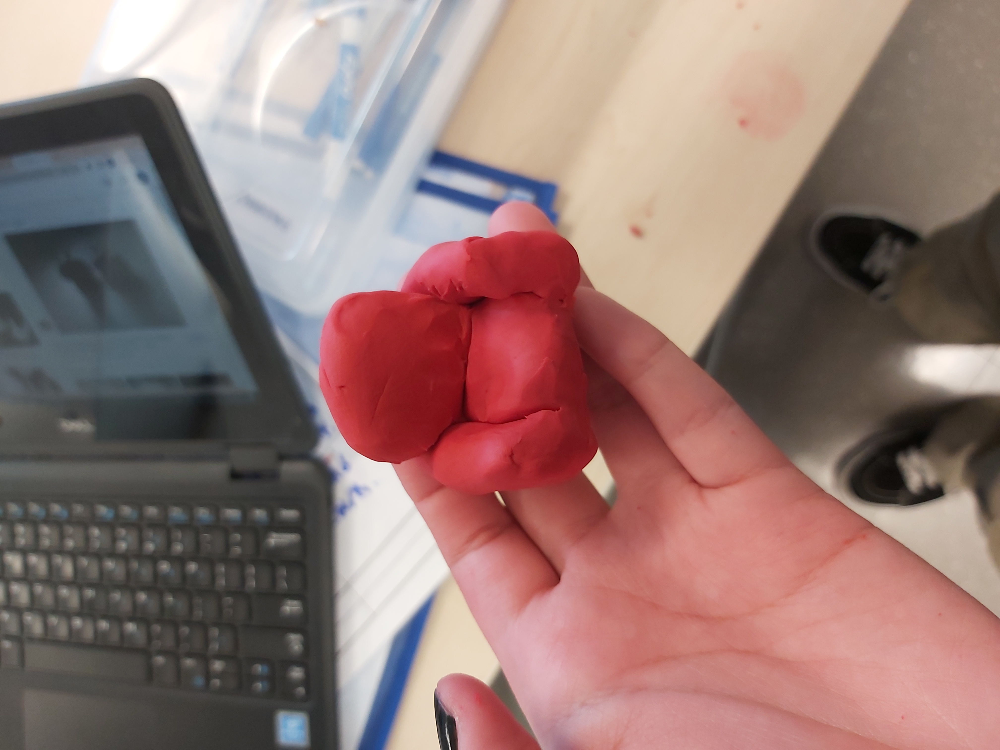
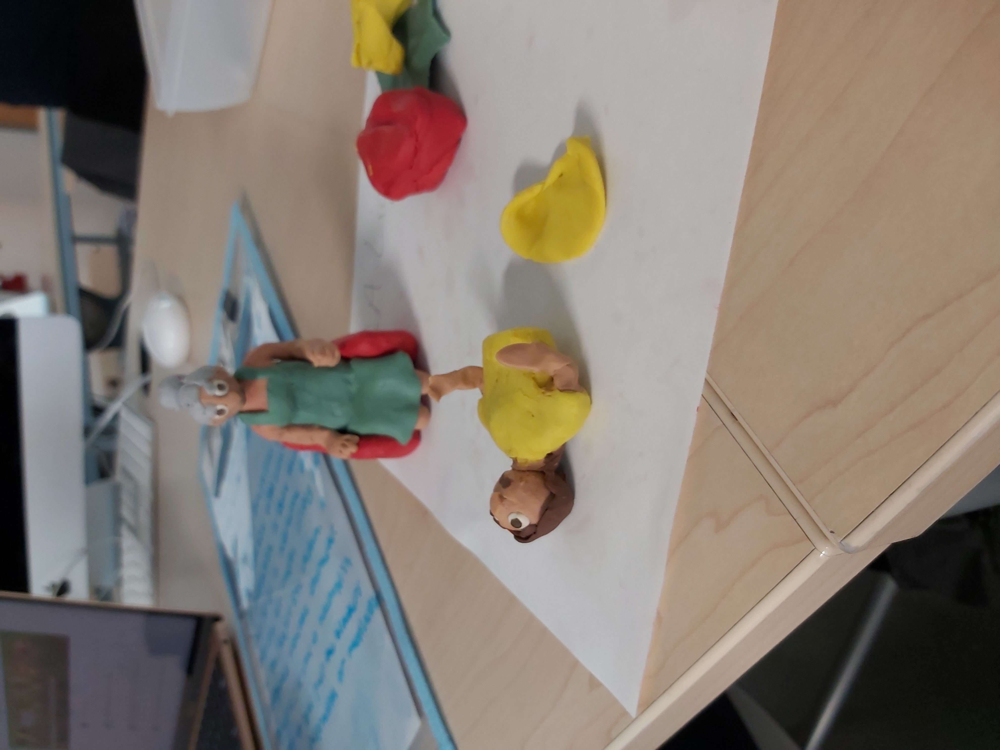
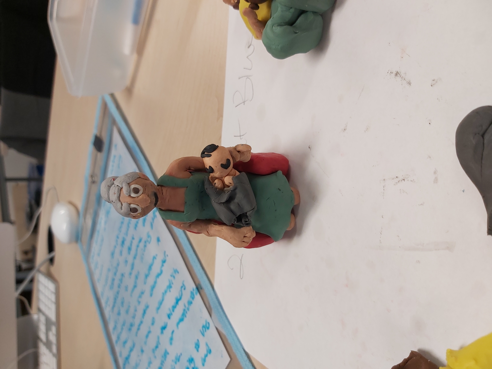
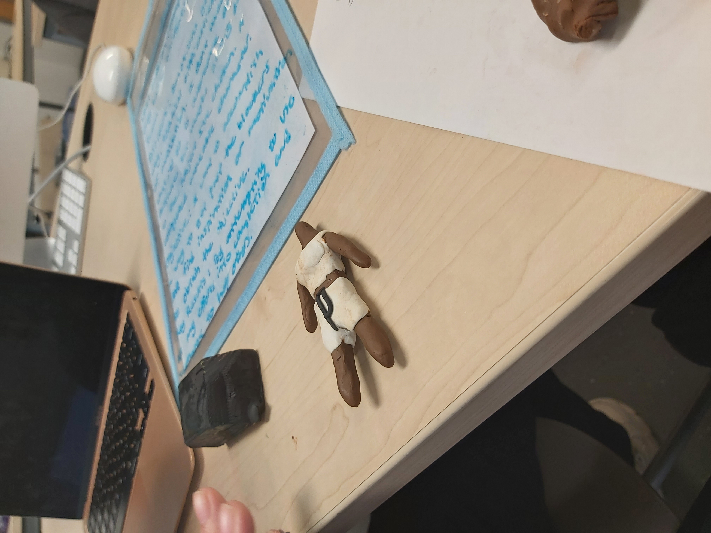
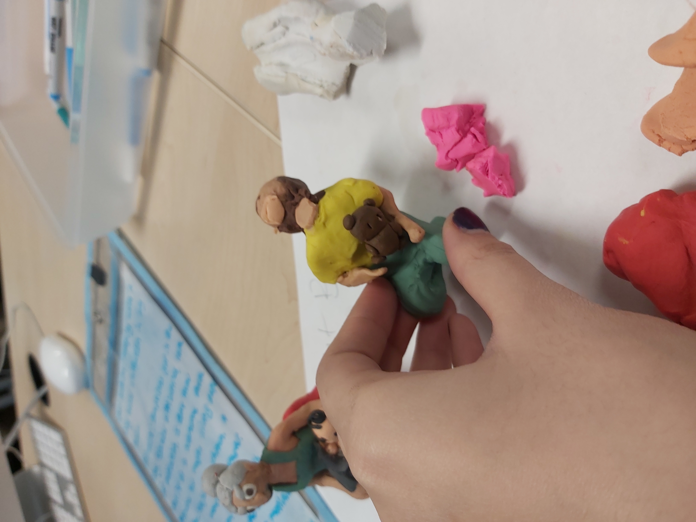
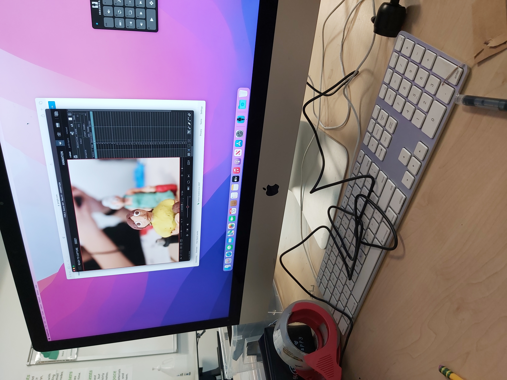
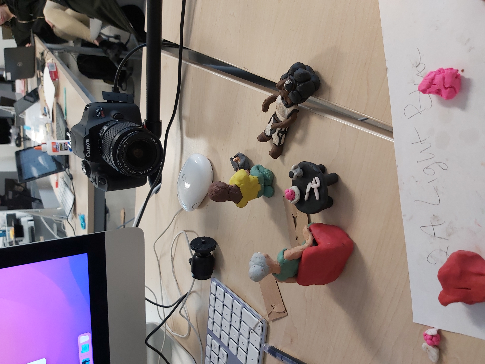

Behind the scenes photos—These represent the making and filming of our short story of domestic violence and generational trauma.
        Final product—This was our final short film in stop-motion animation, representing 3 stages and 2 outcomes of generational trauma from domestice abuse.